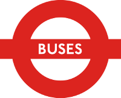

The conference will take place at King's College London, Strand Campus, in the centre of London. See links for nearby accommodation.
On the first day you have registered to attend the conference, please report to the Strand building reception at the below address. On the Strand campus map the Strand building is labelled 'B' and coloured green.
Strand building
Strand Campus
King’s College London
London
WC2R 2LS
Registration will begin at 9:00 each day and take place in room K0.20. Talks will begin at 9:30.
| London Underground |
|---|
| Temple, Charing Cross, Embankment, Waterloo, Holborn, Chancery Lane |
| National Rail |
|---|
| Charing Cross, Waterloo, Waterloo East, Blackfriars |
|  Buses |
|---|
| 1, 4, 26, 59, 68, 76, X68, 168, 171, 172, 176, 188, 243, 341, 521, RV1 |